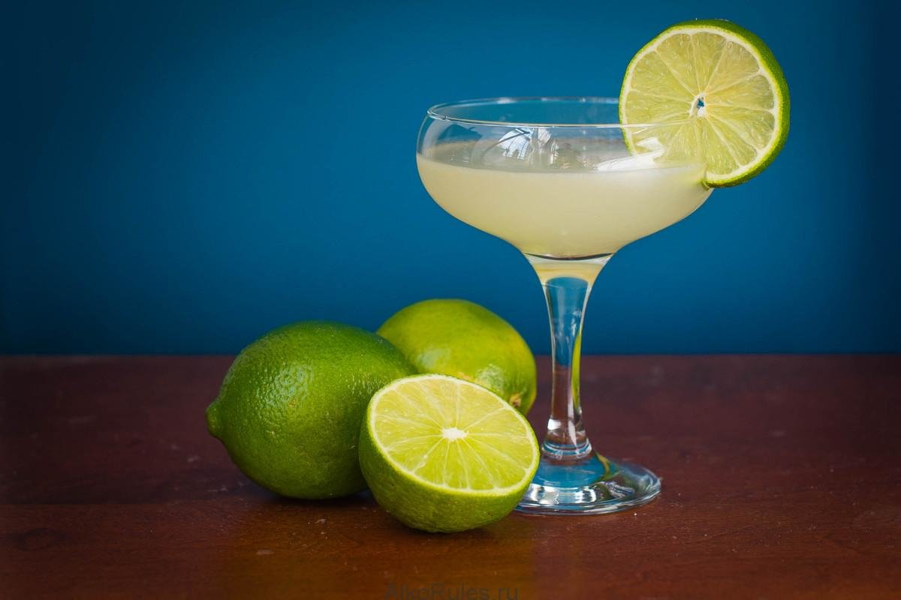

		<?php include "header.php" ?>
		<div class="contaimer-fluid mx-xl-4 mx-lg-3 mx-md-2 p-4">
			<div class="row m-0">
				<div class="col-md-9 p-0 pr-md-2 m-0">
					<div class="container mb-2 p-2 p-sm-3 p-md-4 bg-white rounded">
						<div class="card float-right " style="width: 10rem; ">
						  <ul class="list-group list-group-flush">
						    <li class="list-group-item bg-info text-white"><strong>Острый</strong></li>
						    <li class="list-group-item bg-info text-white" ><strong>Дешевый</strong></li>
						    <li class="list-group-item bg-info text-white"><strong>Крепкий</strong></li>
						  </ul>
						</div >
						<h3 class="display-3 text-center">Дайкири</h3>
						<div class="text-center">
  						
						</div>
						<p style="margin: 0px 150px 100px 100px"><big>Существует не так много коктейлей, способных по узнаваемости сравняться с Дайкири. Благодаря простому составу и оригинальному вкусу у него масса почитателей во всем мире, среди них даже известные люди. Я расскажу, как приготовить Дайкири в домашних условиях, отдельно мы рассмотрим самые популярные вариации.

						Дайкири (правильно делать ударение на последнюю гласную, английский вариант названия «Daiquiri») – это кубинский алкогольный коктейль, состоящий из рома, сахара и лайма. В некоторых рецептах кроме традиционных ингредиентов еще добавляют фруктовые соки, например, апельсиновый или клубничный.
						Коктейль придумали британские моряки в середине XVIII века. В те времена его называли «грог». В суровых морских условиях именно от грога зависело выживание всей команды. Дело в том, что спирт, содержащийся в роме, и витамин C в лайме были лучшей профилактикой цинги – страшного заболевания того времени.
						В тропических условиях питьевая вода быстро портится, поэтому чтобы не умереть от жажды перед длительным морским походом команда судна всегда запасалась ромом. Со временем это стало неактуальным, и о коктейле забыли.
						Второе рождение коктейля случилось в 1909 году, когда рецептом Дайкири заинтересовался американский медик Люциус Джонсон. Он узнал о напитке, изучая морскую историю. В одном из трактатов было подробное описание забытого рецепта. После нескольких экспериментов Джонсон подобрал идеальные пропорции ингредиентов.
						Люциус предложил попробовать коктейль членам Клуба Армии и Флота США. Морякам Дайкири очень понравился, они распространили его рецепт среди своих знакомых. Через несколько лет о Дайкири уже знали не только в Америке, но и в Европе.
						</big></p>
						<button type="button" class="btn btn-primary col-auto mr-auto bg-success" data-toggle="button" aria-pressed="false" autocomplete="off">Мне понравилось</button>
						<button type="button" class="btn btn-primary col-auto mr-auto bg-danger" data-toggle="button" aria-pressed="false" autocomplete="off">Мне не понравилось</button>
						
						</div>
						<div>
						<div><input class="form-control form-control-lg" class="mx-auto my-2 my-sm-3 my-lg-4 p-3 float-left" type="text" placeholder="Оставьте комментарий">
						<button type="button" class="btn btn-primary btn-lg float-right col-2" style="margin-top: 5px">Отправить</button>
					</div>	
					</div>				
				</div>
				<?php include "footer.php" ?>
				